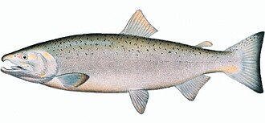

銀ざけの生産量 都道府県ランキング
上位2県と収獲量
銀ざけの収獲量が全国で最も多いのは宮城県で、1万3,042 tです。全国（1万6,673 t）の78%を占めます。

| 順位 | 都道府県 | 収獲量 | 全国に占める割合 |
|---|---|---|---|
| 1位 | 宮城県 | 1万3,042 t | 78% |
| 2位 | 岩手県 | 1,474 t | 8.8% |
銀ざけの生産量の推移（令和2年〜令和6年）
全国の収獲量は、令和2年の1万7,333 tから令和6年の1万6,673 tへ、4%減りました。期間中、1位は一貫して宮城県です。
| 年 | 全国 | 1位 | 2位 | 3位 |
|---|---|---|---|---|
| 令和6年 | 1万6,673 t | 宮城県1万3,042 t | 岩手県1,474 t | |
| 令和5年 | 2万2,055 t | 宮城県1万8,222 t | 岩手県1,377 t | |
| 令和4年 | 2万220 t | 宮城県1万7,258 t | 岩手県939 t | 愛媛県13 t |
| 令和3年 | 1万8,482 t | 宮城県1万5,806 t | 愛媛県21 t | |
| 令和2年 | 1万7,333 t | 宮城県1万4,908 t | 愛媛県75 t |
この数字について
- 分類：鮭の仲間
- 全国の収獲量：1万6,673 t
- この数字が表すもの：収獲量（養殖による収獲量）
- 調査：海面漁業生産統計調査（海面養殖業） 令和6年
- この品目は養殖の統計です。
- 2県分を調査（調査していない県は順位に入りません）
銀ざけの生産量について、よくある質問
- 銀ざけの生産量が日本一の都道府県はどこですか？
- 宮城県です。海面漁業生産統計調査（海面養殖業）（令和6年）で1万3,042 tでした。
- 銀ざけの生産量ランキング2位・3位はどこですか？
- 2位は岩手県（1,474 t）です。
- 銀ざけの全国の生産量はどれくらいですか？
- 1万6,673 t（令和6年）です。